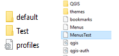

Présentation du premier stage
Direction Départementale Territoriale - MIT
Direction Départementale Territoriale - MIT
Problème serveur application Carine 3.0
Création d'un "QGIS Light"
- Amélioration de l'outil QGIS pour réaliser un QGIS Light ressemblant à l'outil Carine 3.0
- Réalisation de la documentation sur les changements apportés
- Formation sur la géomatique
- Prendre en main les outils (Carine 3.0 et Qgis), établir le lien entre les deux
- Création d'un profil de test
- Mise à jour des préférences

- Création d'un bouton visant à réinitialiser la page en python
- Ajout d'un message d'actualisation
- Optimisation du code
- Ajout des couches dans un onglet
- Faire avec toutes les couches
- Ajout de la fonctionnalité "zone"
- Outil QgisLight